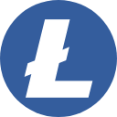

Guía de minería · actualizada el 17 de octubre de 2026
Cómo minar Pepecoin (PEP)
PEP se mina con Scrypt, el mismo proof of work que Litecoin y Dogecoin. La mayor parte procede del merged mining: una máquina en un pool de Litecoin gana PEP además de LTC y DOGE, por el mismo trabajo.
Paso a paso
Consigue un ASIC de Scrypt
La minería Scrypt funciona con máquinas especializadas. ViaBTC menciona como ejemplos el Antminer L9 y el ElphaPex DG1.
Únete a un pool que haga merged mining de PEP
Entre los pools que pagan PEP junto con LTC y DOGE están ViaBTC, F2Pool, Binance Pool, EMCD, AntPool, Mining-Dutch y KuPool. litecoinpool.org también hace merged mining de PEP, pero paga su valor como LTC y DOGE adicionales (un ratio PPS más alto), no en PEP. La lista actualizada está en miningpoolstats.
Añade una dirección de pago de PEP
Tu billetera de minería es cualquier billetera de PEP: configura en los ajustes del pool su dirección de recepción, que empieza por
P. Cada pool tiene sus propios ajustes de pago y mínimos. Una dirección de Ethereum (0x…) no sirve. Consigue una billetera para PEP.Conecta el minero al pool
Usa la dirección de conexión Scrypt (Litecoin) del pool. La recompensa en PEP llegará junto con tus LTC y DOGE.
PEP se mina, PEPE no
PEP es la única moneda Pepe con una red de minería real: se mina junto con Litecoin y Dogecoin, con un hashrate de unos 1,9 PH/s. Los tokens Pepe de Ethereum (PEPE, PEPECOIN) no se minan en absoluto.
Si buscas «minar Pepe coin», aparecen tres activos distintos. Solo Pepecoin (PEP) se mina: tiene su propia blockchain, protegida por proof of work con Scrypt.
Pepe (PEPE) y PepeCoin (PEPECOIN) son tokens ERC-20 en Ethereum. Ethereum sustituyó la minería por proof of stake el 15 de septiembre de 2022, así que no hay nada que minar. Una app o una web que ofrezca «minar PEPE» no lo está minando en ninguna blockchain.
Antes de configurar una dirección de cobro, comprueba el ticker y la red: PEP en la red Pepecoin, con una dirección que empiece por P. PEP, PEPE y PEPECOIN, cara a cara.
Pools de minería que pagan Pepecoin
Con un ASIC Scrypt, cualquiera de estos pools añade PEP a tu minería de Litecoin y Dogecoin. Con una GPU o CPU, unMineable te paga en PEP.
💻 ¿Solo tienes un portátil o un PC gaming? También puedes ganar PEP.
unMineable te deja minar con CPU o GPU y paga en Pepecoin. Descarga su minero, elige PEP en la red Pepecoin (no PEPE en Ethereum) e introduce tu dirección PEP. Espera cantidades pequeñas: un portátil no compite con un ASIC Scrypt.
Minar PEP en unMineable →| Pool | Hardware | Cómo recibes PEP |
|---|---|---|
| ViaBTC | ASIC Scrypt | PEP además de LTC y DOGE |
| F2Pool | ASIC Scrypt | PEP además de LTC y DOGE |
| Binance Pool | ASIC Scrypt | PEP además de LTC y DOGE |
| EMCD | ASIC Scrypt | PEP además de LTC y DOGE |
| AntPool | ASIC Scrypt | PEP además de LTC y DOGE |
| KuPool | ASIC Scrypt | PEP además de LTC y DOGE |
| Mining-Dutch | ASIC Scrypt | PEP directamente (pool de Pepecoin) |
| litecoinpool.org | ASIC Scrypt | Su valor como LTC y DOGE extra, no en PEP |
| unMineable | GPU o CPU | Pago en PEP por minar otras monedas |
unMineable no es merged mining: tu GPU mina otras monedas y el pool te paga en Pepecoin. En unMineable elige PEP en la red Pepecoin, no PEPE (ERC-20). Lista en directo de pools y su hashrate: miningpoolstats.
Se mina junto con
 Pepecoin PEP
Pepecoin PEP
Litecoin LTC- Dogecoin DOGE
- Bellscoin BELLS
- Luckycoin LKY
- Junkcoin JKC
- Dingocoin DINGO
- Shibacoin SHIC
Pepecoin usa AuxPoW (merged mining) sobre Scrypt. Litecoin es la cadena principal, y Dogecoin, Pepecoin y las demás monedas de abajo aceptan el mismo trabajo. Cada pool elige cuáles paga; el pool de Litecoin de ViaBTC paga todas además de LTC. Toda la familia Scrypt.
Calculadora de minería de Pepecoin
¿Cuánto PEP añade tu minero? Introduce tu hashrate y el hashrate actual de la red.
Es una estimación: tu parte del hashrate de la red × 1379 bloques al día (media de los últimos 30 días) × 10 000 PEP, menos la comisión del pool. Los pagos reales varían con la suerte, la dificultad y el método de pago del pool. Con merged mining esto se suma a tus LTC y DOGE.
Queremos a los mineros
Los mineros mantienen vivo Pepecoin: cada bloque y cada PEP que existe sale de su hashrate. Pepecoin no tiene premine ni una empresa que emita monedas, solo mineros.
Únete al canal dedicado a mineros en el Discord de Pepecoin: consejos sobre pools, ayuda con la configuración y novedades.
Discord de Pepecoin →Hashrate, dificultad y pools en directo: miningpoolstats: Pepecoin · Estadísticas de la red en este sitio
Qué esperar
Competencia. El hashrate de Pepecoin era de unos 2,9 PH/s a principios de octubre de 2026, en el mismo rango que el de Dogecoin. Hashrate comparado.
Emisión. Hasta 14,4 millones de PEP al día (1440 bloques con el objetivo de 60 segundos), unos 13,8 millones con el tiempo medio real entre bloques de 62,6 s, repartidos entre todos los mineros. Tiempos de bloque en directo.
Rentabilidad. Depende del precio de PEP, de la dificultad y de lo que pagas por la electricidad. Calculadoras: WhatToMine, hashrate.no, ASIC Miner Value.
Preguntas frecuentes
¿Puedo minar Pepecoin con GPU o CPU?
No en la propia red Pepecoin, que funciona con ASIC Scrypt. Aun así puedes ganar PEP con GPU o CPU en unMineable: mina otras monedas y te paga en Pepecoin (PEP). Elige PEP, no PEPE, y usa una dirección que empiece por P.
¿Qué pools de minería pagan Pepecoin?
ViaBTC, F2Pool, Binance Pool, EMCD, AntPool, KuPool y Mining-Dutch pagan en PEP. litecoinpool.org mina PEP con merged mining pero paga su valor como LTC y DOGE extra. unMineable paga PEP a mineros con GPU y CPU. La lista en directo está en miningpoolstats.
¿El merged mining reduce mis recompensas de LTC o DOGE?
No. El trabajo no se reparte entre cadenas. Según el pool ViaBTC, PEP es una recompensa adicional del merged mining que no requiere hashrate extra.
¿Qué hardware mina PEP? ¿Sirve un Antminer L7 o L9?
Un minero ASIC para Scrypt, la misma máquina que se usa para Litecoin y Dogecoin. ViaBTC menciona como ejemplos el Antminer L9 y el ElphaPex DG1. Sí, un Antminer L7 o L9 mina PEP: conéctalo a un pool que haga merged mining de Pepecoin y recibirás PEP además de LTC y DOGE.
¿Puedo minar Pepe (PEPE)?
No. Pepe (PEPE) es un token ERC-20 en Ethereum, y Ethereum usa proof of stake en lugar de minería desde el 15 de septiembre de 2022. La moneda que se mina es Pepecoin (PEP), con su propia blockchain.
¿Qué billetera necesito para cobrar la minería?
Cualquier billetera que admita Pepecoin (PEP) en la red Pepecoin, como Pepecoin Core o una tarjeta Tangem. Su dirección de recepción empieza por P. MetaMask está pensada para redes compatibles con Ethereum y no incluye Pepecoin.
¿Cuánto PEP paga la red?
Cada bloque paga 10 000 PEP. Con el objetivo de un bloque por minuto, son hasta 14,4 millones de PEP al día, repartidos entre todos los que lo minan. En el último año los bloques han tardado de media unos 62,6 segundos, así que la cifra real ronda los 13,8 millones.
Más guías
Pepecoin: ¿cuál es cuál?
PEP, PEPE y PEPECOIN: tres activos distintos, cara a cara.
Cómo funciona el merged mining
Una máquina Scrypt, tres monedas: Litecoin, Dogecoin y Pepecoin.
Cómo comprar PEP
Dónde se negocia PEP y cómo retirarlo a tu propia billetera.
Billeteras para PEP
Pepecoin Core, Tangem y la tarjeta Tangem oficial de Pepecoin.
Pepecoin y MiCA
Qué es el whitepaper de la UE y qué no implica.
Glosario
AuxPoW, UTXO, hashrate y otros términos que verás una y otra vez.
Estadísticas de la red
Altura de bloque, suministro, direcciones y tiempo entre bloques, día a día.
Fuentes
Minería
- ViaBTC: cómo minar PEP
- Binance Pool añade el merged mining de PEP
- F2Pool: PEP
- miningpoolstats: pools de Pepecoin (incluye Mining-Dutch y AntPool)
- Mining-Dutch: pool de Pepecoin, pagos directamente en PEP
- AntPool añade PEP al merged mining de LTC, 6 de diciembre de 2024 (Ultramining)
- KuPool: PEP en su lista de monedas
- EMCD: mining pool de Pepecoin
- Ayuda de litecoinpool.org: las monedas en merged mining elevan el ratio PPS de LTC/DOGE